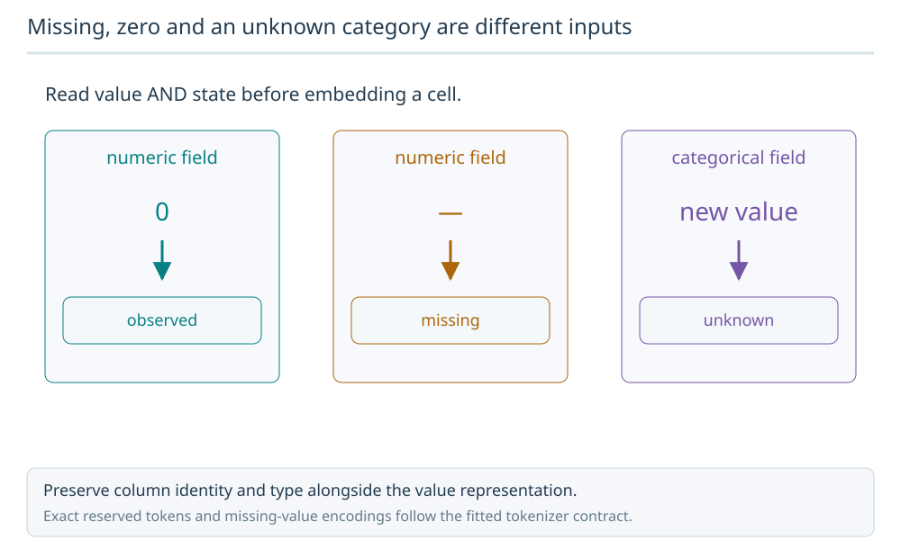
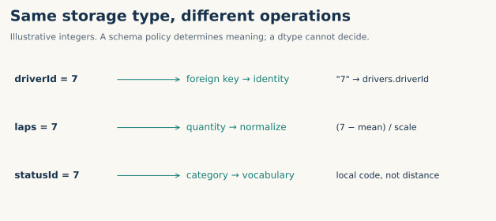
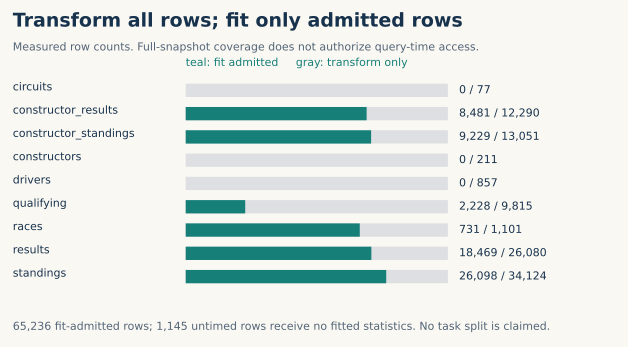
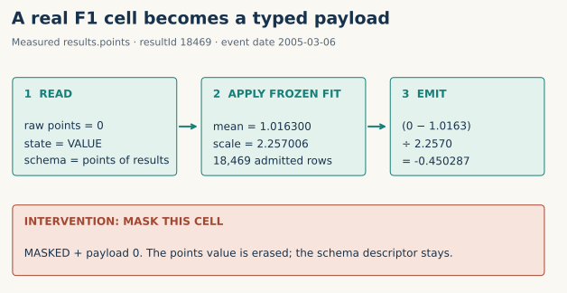

Year 5 · Quarter 2 · Lesson 172
Schema tokenization
One skill: turn a declared database schema into reproducible typed inputs, without learning preprocessing from held-out rows. Core lesson: about 15 minutes; coding lab: 35–50 minutes.
Lesson 171 established which database bytes and relationships we have. It did not specify what a model should receive for a cell. Here we build that input contract. Lesson 173 will use such inputs to define training objectives.
1 · Separate the value from its role¶
A model input needs both the observed value and the policy for interpreting it. Reuse the corpus identities from Lesson 171; assigning a token does not change which source supplied the row.
In plain terms. A database stores values. A tokenizer says what each value means, how to represent it, and which information must stay hidden.
2 · An integer is not a meaning¶
A storage dtype describes how bytes are represented: integer, floating point or string. A semantic type describes how we use a value: quantity, category, text, timestamp or key. A column role describes its database function: feature, primary key, foreign key or event clock.
Worked example. The integer 7 could be a driver ID, a lap count or a status code. Subtracting the mean driver ID has no meaning for an identity link. A lap count has a meaningful magnitude. A status code names a category; code 8 need not mean “one more” than code 7.
Missing, zero and an unknown category are different inputs
Tokenization must preserve field identity, value type and missingness. A missing numeric field, an observed zero and an unseen categorical value are three different states.

Predict: Should an unseen category become the numeric value zero?
No. Use the fitted categorical vocabulary and its unknown-value policy. Keep numeric zero and missingness distinct according to the declared encoder contract.
Answer: No. Use the fitted categorical vocabulary and its unknown-value policy. Keep numeric zero and missingness distinct according to the declared encoder contract.



Our explicit schema assigns all 67 columns a type and a role. For example, race-car number is a category, while laps is numerical. These are reviewed course policies, not meanings proven by the file dtype. Keys come from the pinned RelBench F1 source and Parquet metadata. An unrecognized type or undeclared column raises an error; the tokenizer does not guess.
A token here is a record with a schema descriptor, state and payload. A payload is the encoded value. For a column with N rows, the output contains N states and N scalar or string payloads, plus one shared descriptor and fitted preprocessing record. Table and column names identify the descriptor; input column order does not define identity.
| Kind | Course payload | Meaning retained |
|---|---|---|
| Number | (value − training mean) / training SD |
Magnitude relative to admitted values |
| Category | Sorted training vocabulary code, starting at 1 | Local label; 0 reserved for non-value states |
| Text | Original Unicode string | Content, without a learned embedding |
| Key | Exact identifier string | Identity and declared target table |
| Timestamp | UTC epoch days | Time coordinate; not proof of availability |
Category codes are local to a column. Code 2 in one database does not mean the same thing as code 2 elsewhere. Do not feed the code to a model as an ordered quantity. Keys are relation metadata, not magnitude features. Converting a large integer key through floating point can lose identity; the lab checks an ID larger than 2⁵³.
3 · Fit once, then transform¶
Fitting derives statistics or vocabulary from admitted rows. Transforming applies that frozen state to a value. If a held-out value changes, the fitted state must stay identical.
Worked example. Admitted values are 10, 20, 30. Their mean is 20. Their population variance is (100 + 0 + 100) / 3; their standard deviation is about 8.164966. The value 20 becomes zero. A fourth, held-out value of 999 must not change that calculation.
Predict: what happens to the encoding of the unchanged value 20 if we incorrectly include 999 in the fit?
The implementation makes the boundary visible:
train = values[admitted].dropna()
mean = train.mean() if len(train) else 0.0
scale = train.std(ddof=0) if len(train) else 1.0
scale = scale if scale > 0 else 1.0
payload = (observed_value - mean) / scale
For this audit, rows in time-bearing tables are admitted only when date < 2005-01-01. Untimed tables admit zero rows for fitting. Their numerical defaults are mean 0 and scale 1; their category vocabulary is empty. These defaults are explicit policy, not learned estimates. All non-null categories in those tables consequently become UNKNOWN. Empty-fit counts remain visible in the report.


Scope check. We transform the entire stored snapshot to audit coverage. That does not grant a prediction access to every token. Event-time admission is a course fit policy, not a task-label split or proof of historical availability. The three untimed tables remain unresolved. A later query sampler must enforce its own cutoff and information policy.
4 · Zero needs a state¶
MISSING means the source has no value. MASKED means we deliberately hide a value, for example to make it a prediction target. UNKNOWN means a category is observed but absent from the fitted vocabulary. VALUE means an observed value has a supported encoding.
All three non-value category states use payload zero. The state tells them apart. Masking has priority even if the source was null. It erases the payload before any value-dependent encoding; changing a hidden raw value must not change the output. This is an input contract, not yet a loss function.
The same zero, four different meanings. Fit a numerical column on [10,20,30], and a category column on red, blue. Then transform these cells:
| Cell | State | Payload |
|---|---|---|
| Observed number 20 | VALUE | 0 |
| Absent number | MISSING | 0 |
| Number 20, hidden | MASKED | 0 |
| Observed category green | UNKNOWN | 0 |
The first zero is a real standardized value: 20 equals the fitted mean. The other zeros carry no observed value payload. Dropping the state would make these inputs indistinguishable. Transfer check: deliberately mask a null cell or the unknown category green. Both become MASKED with zero payload, because masking takes priority over source-dependent states. An unseen numerical value, in contrast, can still be VALUE; UNKNOWN here refers to categorical vocabulary membership.
Measured worked example. The next figure follows an actual held-out results.points cell. Its fit uses only pre-2005 results. The bottom intervention masks that same cell while keeping its schema name. Numbers are displayed rounded; the report keeps full precision.


resultId=18469 has 0 points on 2005-03-06. With mean 1.016300 and scale 2.257006, its payload is -0.450287. This row is transformed but excluded from fitting.
5 · What does a learned model add?¶
Read Relational Transformer v1, §3.1, especially cell token encoding. RT combines datatype-specific value projections with text embeddings of column/table names; masked values use learned vectors. It normalizes timestamps using training statistics and uses a frozen text encoder. Our deterministic payload contract supplies none of those learned components. We retain missing cells explicitly; the paper's context construction includes non-missing feature cells.
This is a pipeline lesson, not an RT architecture reproduction. The source ledger records the differences. A later model must turn our payloads into compatible vectors and define how to use key links. Shared type handlers alone do not establish cross-database transfer.
6 · Complete execution, bounded claims¶
Named experiment: L172 Full F1 Schema-Tokenization Audit. Fixed: the pinned complete F1 archive, every column policy and the pre-2005 fit boundary. Interventions: reorder columns, change held-out number/category values, and mask every cell. Measured: exact coverage, states, fit counts, output hashes and invariant checks. No sampling, optimizer, training seeds or model selection are involved.
| Table | Rows transformed | Columns | Rows admitted to fit |
|---|---|---|---|
| circuits | 77 | 8 | 0 |
| constructor_results | 12,290 | 5 | 8,481 |
| constructor_standings | 13,051 | 7 | 9,229 |
| constructors | 211 | 4 | 0 |
| drivers | 857 | 7 | 0 |
| qualifying | 9,815 | 7 | 2,228 |
| races | 1,101 | 7 | 731 |
| results | 26,080 | 15 | 18,469 |
| standings | 34,124 | 7 | 26,098 |
Complete: 97,606 rows, 67 columns, 866,746 cells. All-table column reordering, all-cell mask erasure and every numerical/category held-out fit intervention pass.
The separate scalar verifier checks every original cell and all 227,716 non-null FK references. It rejects deliberately wrong learner functions and corrupted evidence identities. Passing these checks establishes the declared transformation contract on this population. It does not establish model accuracy, historical availability or original paper identity.
Evidence boundary: full selected tokenization audit COMPLETE; whole-paper reproduction and fresh pretraining NOT_RUN; historical availability NOT_ESTABLISHED; live Colab and deployment NOT_CHECKED. Learner mastery remains PENDING_WRITTEN_DEFENSE.
7 · Build it, then defend it¶
Next step in the sequence: Lesson 173 gives these inputs a prediction target and loss. The tokenizer defines what enters the model; the objective defines what it learns to predict.
Student notebook · Prepared solution view · Quick reference · Reproduction commands
Implement three live functions: fit a column on admitted rows; encode values with explicit states; assemble named columns without losing schema identity. The full archive audit calls your implementations. CHECK cells expose the first failure before you run the larger audit. The solution embeds the exact data and source packet and can execute in an empty directory.
EXIT. Defend a policy for one unseen table. Explain what can be reused, what must be fitted locally, how key links survive, and which availability evidence is missing. Give a counterexample where a dtype-only rule fails. Predict the outcome before running a held-out-value intervention.
Tomorrow, reconstruct the four states from memory. In a week, explain why category-code reuse across databases is unsafe. Ask the teacher follow-up questions about any unclear step, or submit your notebook and written defense for review.